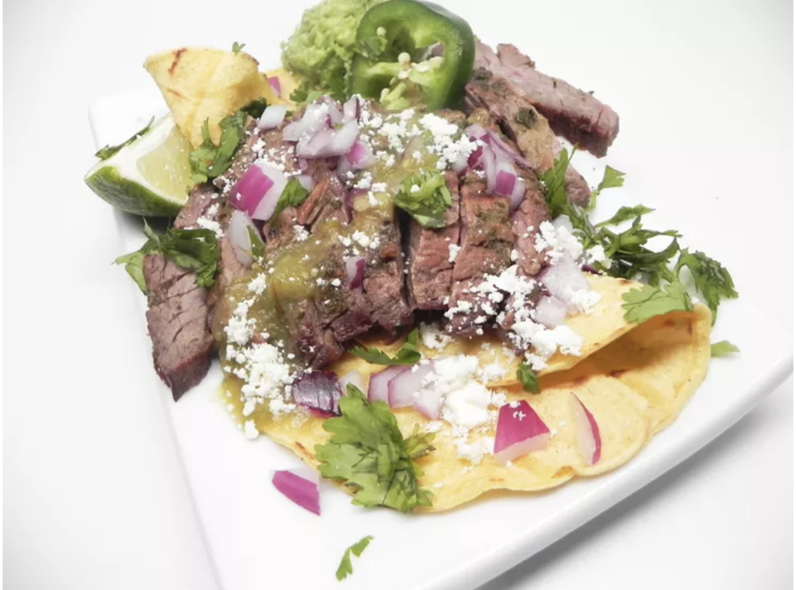

Carne Asada al Cilantro

In this true Mexican carne asada recipe, skirt steak is marinated in a cilantro-beer sauce and grilled
(asada) to perfection. Serve with a side of drunken beans and corn tortillas. If preferred, substitute
flank steak for the skirt steak.
Ingredients
- ½ cup dark Mexican beer
- ¼ cup avocado oil
- ½ white onion, cut into large wedges
- 1 cup fresh cilantro leaves
- 2 pounds beef skirt steak
Directions
- Combine beer, oil, onion, cilantro, onion, cilantro, salt, and pepper in a blender; blend until cilantro marinade is smooth.
- Place steak in a large resealable plastic bag and pour cilantro marinade on top. Seal bag and shake to fully cover meat with the marinade. Refrigerate at least 8 hours or overnight.
- Preheat an outdoor grill for medium-high heat and lightly oil the grate with avocado oil. Grill the meat, turning over once, about 3 minutes per side for medium rare.